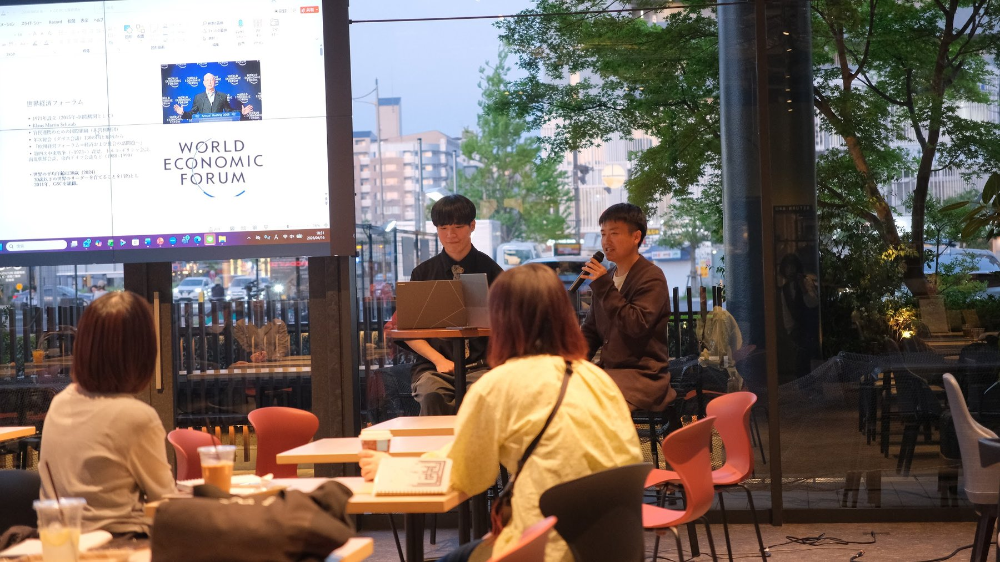

あいまい会議 Vol.3
More than Colorの美しさ：色の曖昧さに惹かれる私たちのこころAimai Kaigi Vol.3
Beauty beyond colour: why ambiguous colours draw us in
茜色や浅葱色といった日本の伝統色に，私たちはなぜ惹かれるのか。色の名前や物語，季節や風土といった「色以上のもの」をめぐって，平安時代の色彩を研究・実践するゲストとクロストークをしました。
Why are we drawn to traditional Japanese colours such as akane and asagi? A cross-talk with a guest who studies and practises Heian-period colour, on names, stories, seasons and places: everything "more than colour".
- ゲストGuest
- 高松秀徒さん（HOSOO 古代染色研究所）Hideto Takamatsu (HOSOO Institute of Ancient Dyeing)
- 会場Venue
- GOCONC（京都リサーチパーク）GOCONC, Kyoto Research Park
- 共催Co-host
- Global Shapers Community Kyoto Hub